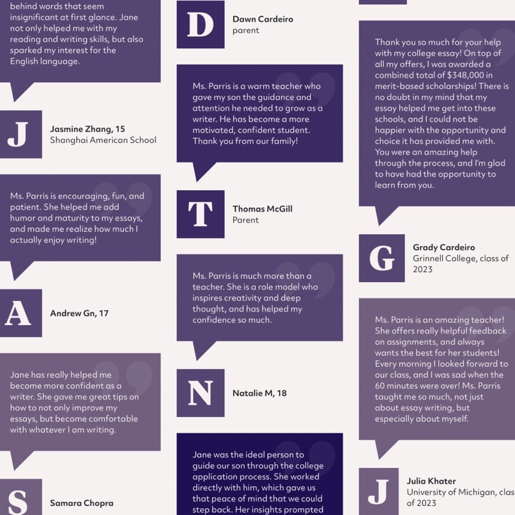
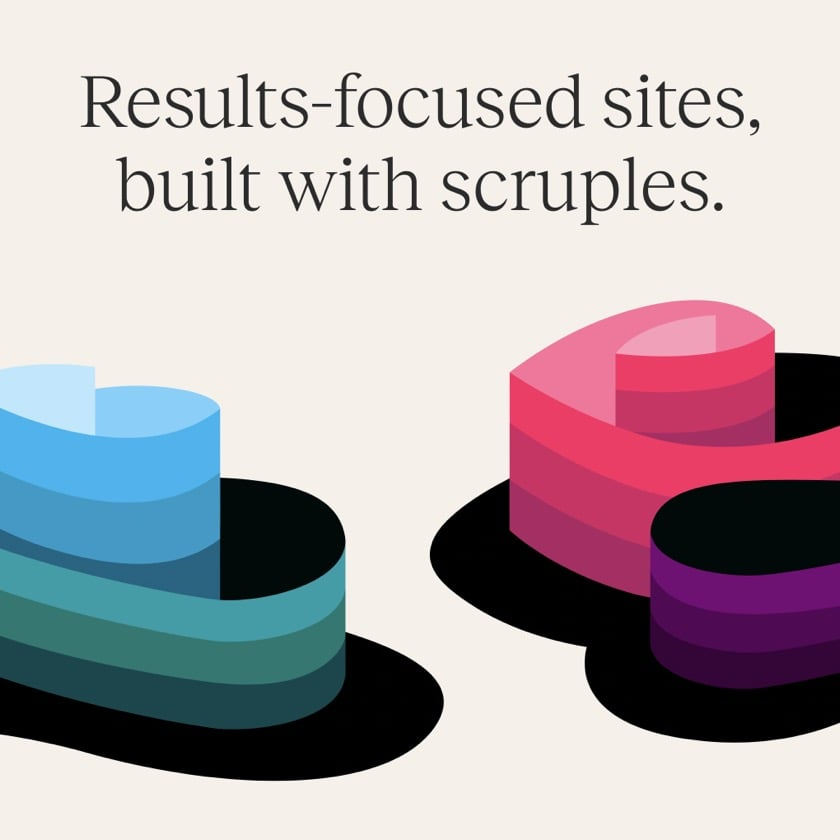
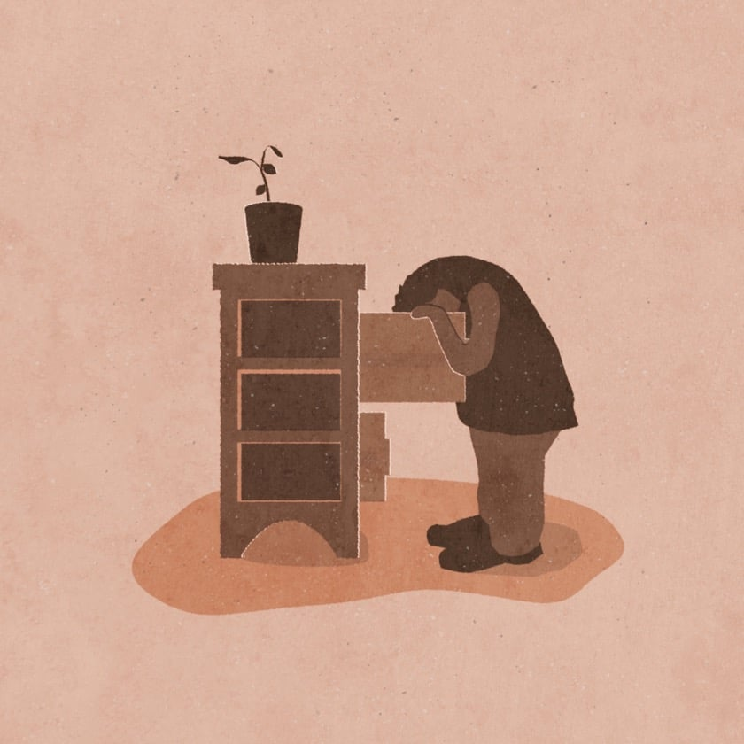
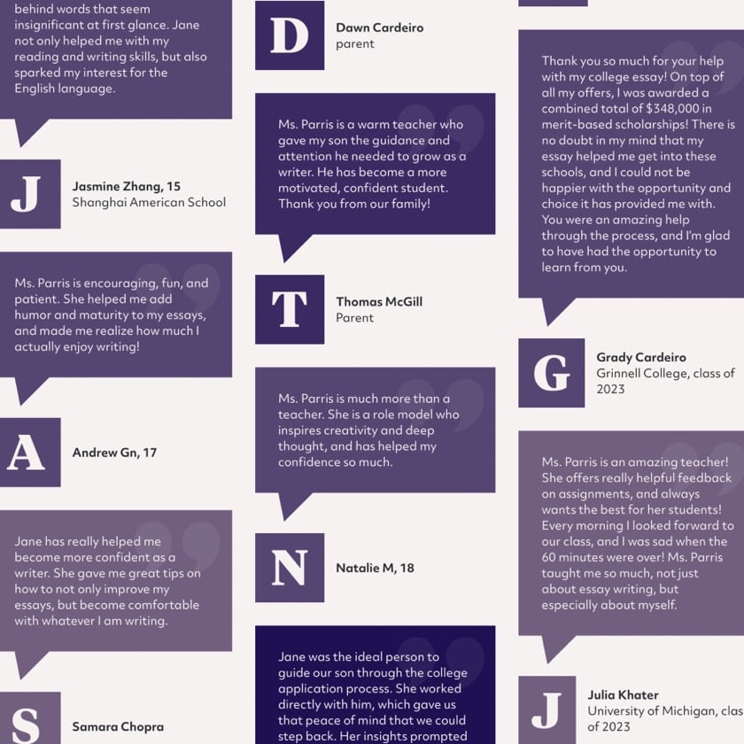
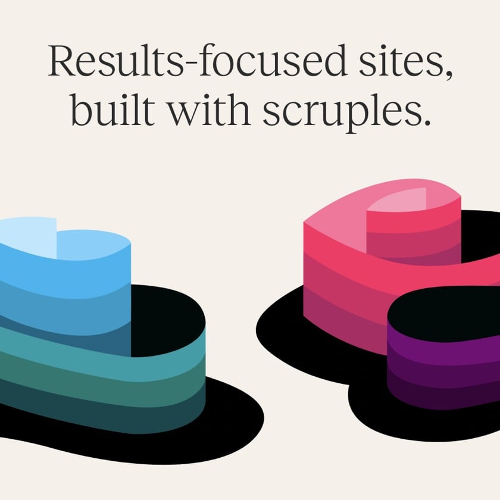
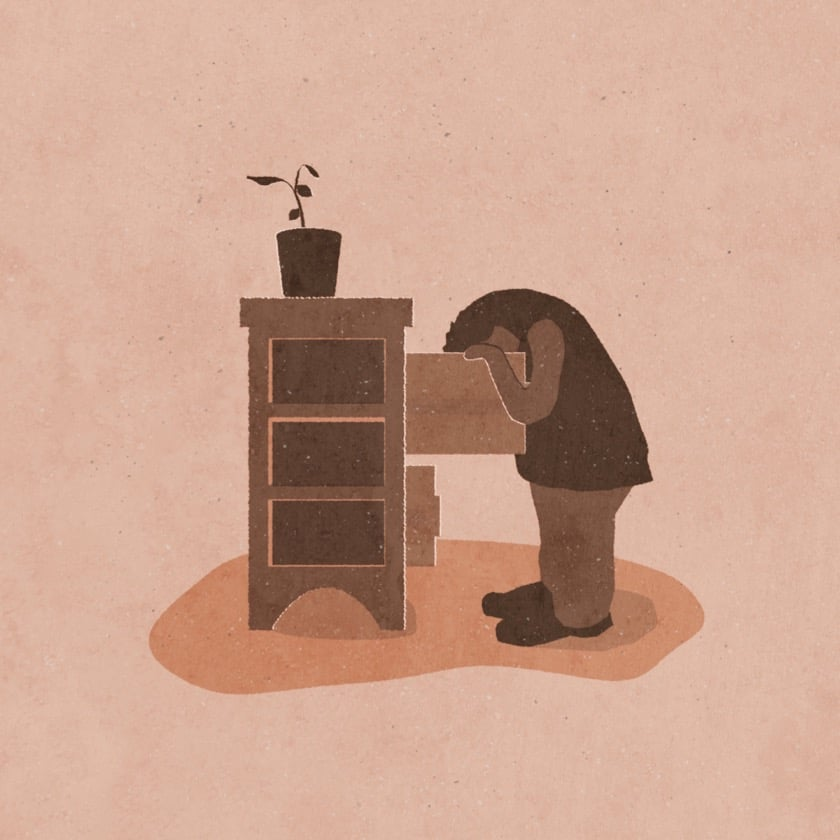

Colin Lewis
I am a storyteller,
and I work as a UX Engineer: someone who tells stories with words, pictures, code, and empathy. I’m equal parts designer, front-end developer, and illustrator, and I spin all of this into websites and books and try to build good stuff with a lotta heart.
“Colin is a rare species of web developer. He has an ultra-fine sensitivity to detail, a sense of artistry, and all the technical skill to make it happen.”
Recently
Custom site for Jane Parris.
Collaborated with Statamic and redesigned their Documentation site.
Building the new visual poetry section at The Literary Bohemian.
Scruples Studio site of the day on Typewolf.
Phase two illustrations and content are live at Scruples Studio.


 





Work with me
As a freelancer, I work with custom illustration, UX design, and website strategy, design and build. I divide my time between two places: Scruples Studio and Unlikely Objects.
Unlikely Objects is a laboratory for unusual books and games (and serious side projects as well).
At Scruples Studio I create fast, privacy-focused, bespoke websites with the talented and inimitable Dave Smyth. Scruples sites are inclusive and memorable, guided by principles that are good for users and good for business.
You have a story. I would love to tell it. Use the contact form link below to book a chat, answer a question, or start something amazing.